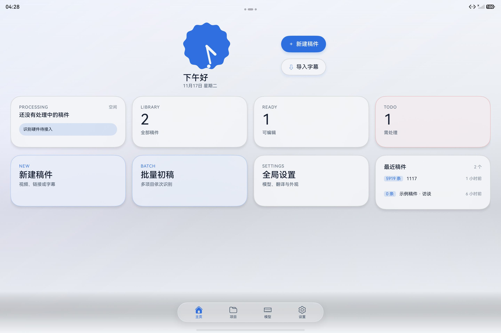
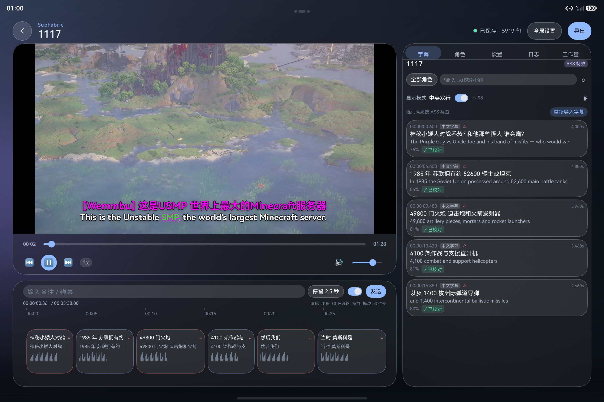
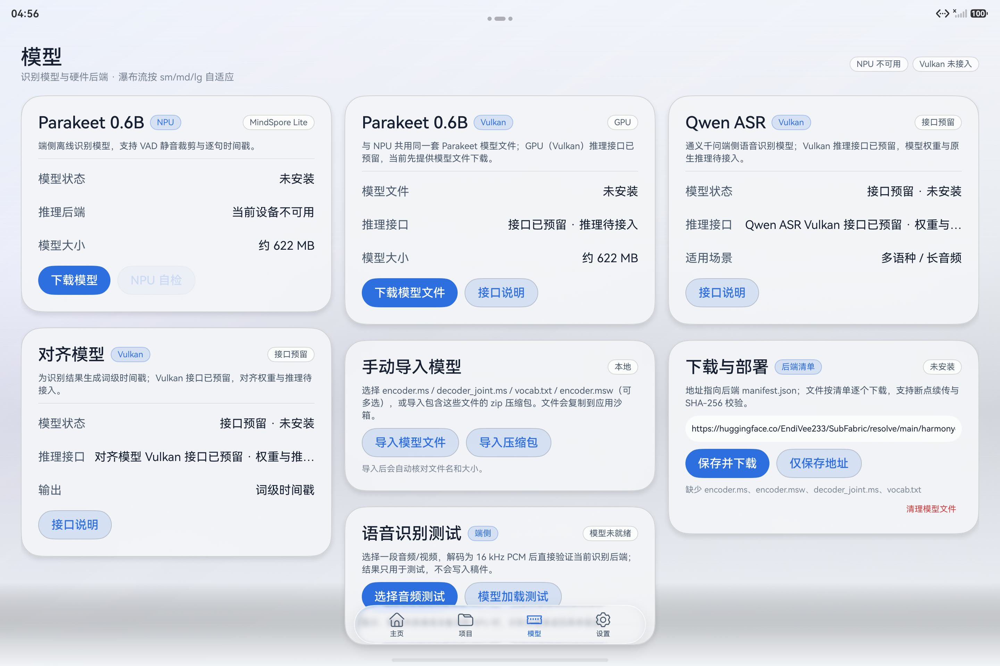
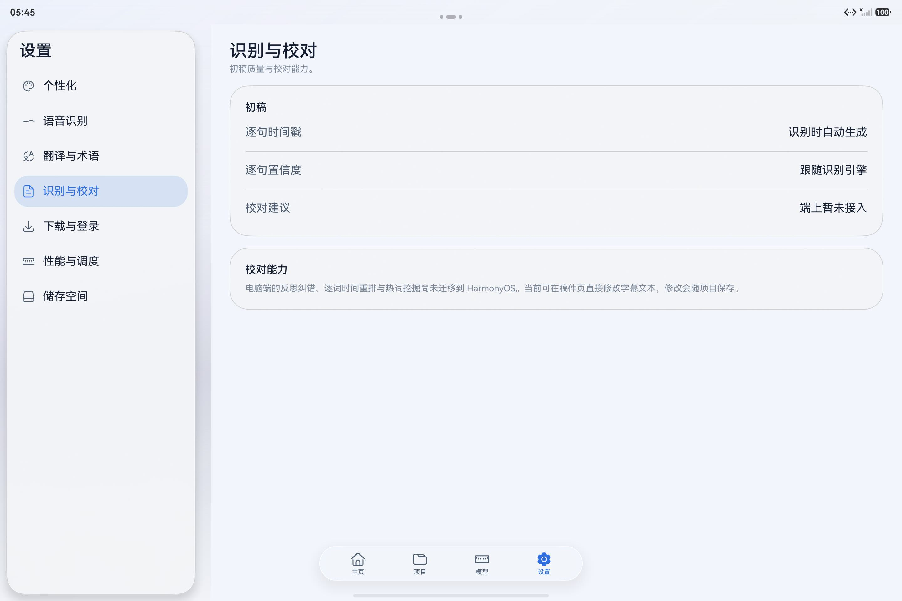
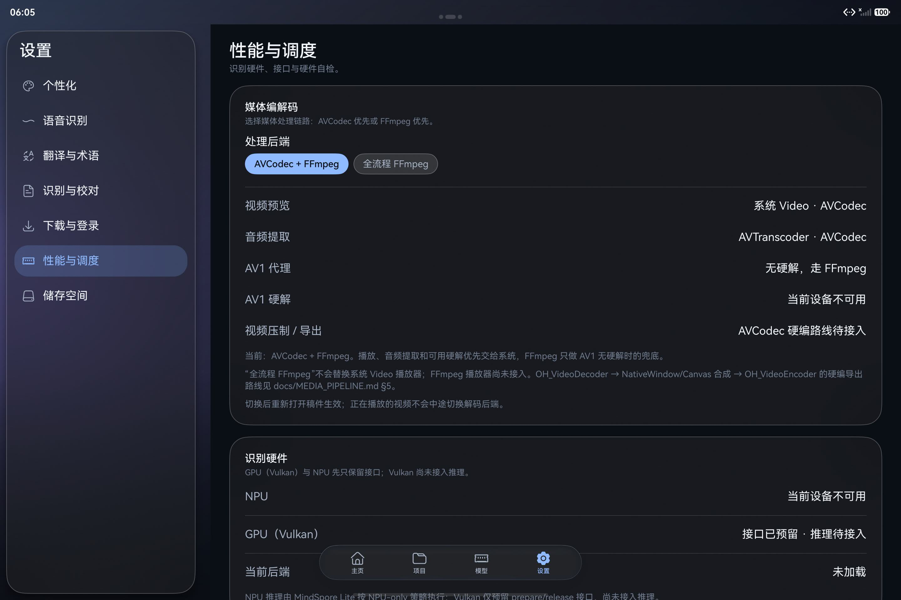
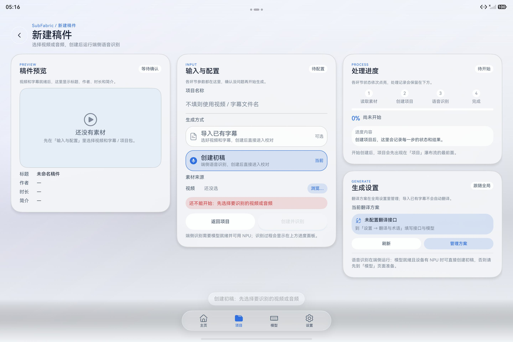

SubFabric · HarmonyOS Status
只统计可核对的功能，不把“接口预留”写成“已接入”。状态来自当前代码、构建结果和本轮平板模拟器实测； 真实模型、NPU 与 arm64 真机另行标注。
.ms 权重与 NPU 真机；初稿成功路径、识别测试、模型加载测试都无法完成。.ms 权重。| 功能 | 状态 | 说明 / 证据 |
|---|---|---|
| 四分区导航与浮动底栏 | 已完成 | 主页 / 项目 / 模型 / 设置四个 HdsTabs 分区；浮动胶囊、握姿适配；.scrollable(false) 阻止滚轮/横向滑动切页。 |
| 浅色 / 深色 / 跟随系统 | 已完成 | ThemeManager + HomeTokens 双主题；系统栏图标同步；重启后保持选择；平板模拟器浅色主页/项目/模型/设置/编辑页已核对。 |
| 沉浸背景 / 玻璃卡 / 流光配色 / 动效 | 已完成 | 纯色、模糊流光、自定义图片三种背景；流光配色、动效/速度、毛玻璃三档滑杆；全局页面跟随主题令牌。 |
| 底栏高度深色阴影带移除 | 已完成 | 删除 ImmersiveBackground 底部 120vp 压暗渐变；主 HdsTabs 的 gradientMask 改为透明。浅色主页/模型页底部已复验。 |
| 自定义背景图 / 莫奈取色 | 部分验证 | 选图、复制到沙箱、effectKit 取色并应用为流光色彩的代码已接；系统图片选择器与真实图片取色的端到端截图未单独复验。 |
| 功能 | 状态 | 说明 / 证据 |
|---|---|---|
| 主页聚合 / 最近稿件 / 快捷入口 | 已完成 | 处理中、全部稿件、可编辑、需处理、新建/批量/设置、最近稿件；按 sm / md / lg 切换 2 / 3 / 4 列瀑布流。 |
| 项目瀑布流 / 侧栏 / 文件夹菜单 / 项目卡菜单 | 已完成 | 项目卡点击进入编辑页；长按/鼠标右键支持重命名、详细信息、删除并二次确认；文件夹重命名/删除；lg 同级侧栏与 sm/md 覆盖式抽屉。 |
| 新建页四板块 / 视频与字幕导入 / 自动进编辑页 | 已完成 | 预览 / 输入与配置 / 处理进度 / 生成设置；SRT、VTT、ASS、JSON 导入；视频在创建时复制进沙箱；创建成功后 320ms 自动打开编辑页。 |
| 项目包 zip 导入 | 部分验证 | 读取 subtitle.srt/ass、translation.json、project.json 的代码已实现；用 8.4 MB ASS 打成 914 KB 项目包实测成功，解压约 31–47 ms、完整读取 2.1–2.2 s，5919 条字幕进入待创建状态；带 translation.json 的完整包与真机低内存场景未单独复验。 |
| 创建初稿（媒体 → 建项目 → ASR → 写 cues） | 部分验证 | 选媒体、复制沙箱、创建项目、调用 runRecognition()、失败删除空项目与本次媒体，均已接；成功识别需模型 + NPU，本轮只验证了失败清理路径。 |
| 批量初稿 | 未接上 | 主页入口仍提示“端上尚未接入”；没有批量选择、队列、进度面板与结果落盘。 |
| 功能 | 状态 | 说明 / 证据 |
|---|---|---|
| 卡片 → 编辑页共享元素转场 | 已完成 | bindContentCover + geometryTransition + animateTo；ModalTransition.NONE，卡片与全屏编辑页共享 id，关闭在 onWillDismiss 中缩回卡片；旧截图替身/NavPathStack 动画已移除。 |
| 系统 Video 播放 / seek / 前后帧 | 已完成 | H.264/H.265 原片走系统 AVCodec；播放/暂停、进度、音量、上一帧/下一帧；平板模拟器已播放验证。 |
| AV1 无硬解 → FFmpeg H.264 代理 | 已完成 | FFmpeg libdav1d 软解 + OpenH264 编码，生成 720p H.264 代理；x86_64 8 秒 AV1 样例约 1.6–1.7 秒生成，系统 Video 可播放。 |
| AV1 系统硬解 | 部分验证 | 代码路径已按 OH_AVCodec_GetCapabilityByCategory(AV1, HARDWARE) 分支；模拟器无 AV1 硬解，未在真机验证硬解画面与功耗。 |
| ASS 逐词字幕 / 中英双语 / 当前词高亮 | 已完成 | 严格按 ASS 逐词时间渲染；中文颜色取每行内联 \c 与说话人色，英文未唱色取 Sub 样式色、当前词取文件高亮色；80ms ticker 切词。平板播放到 00:03 已核对中英颜色与人物色。 |
| 时间轴真实 cue / 字幕列表 / 人物列表 / 双栏 | 已完成 | List + LazyForEach 渲染真实 Cue；右边栏「字幕/人物/设置/日志/工作量」改为 HdsTabs；字幕与人物双栏；人物两列 Grid + 添加按钮，点击标注当前句、长按编辑名字/颜色，双栏人物单列。 |
| 字幕卡双击行内编辑 / 保存 | 已完成 | 单击 seek，双击进入中文/英文两个 TextArea；保存更新 targetText/sourceText/edited 并写入 cues.json；修改英文原文会清空旧逐词时间。 |
| 日志 Tab / 工作量 Tab | 已完成 | 日志读取 Logger 环形缓冲；工作量显示真实 cue/word/speaker/duration 统计。 |
| 字幕导出 SRT / VTT / ASS / JSON | 部分验证 | AppStore.exportAs() 与 common 的写文件函数已存在，但编辑页没有导出按钮/分享入口，用户无法从 UI 触发。 |
| 波形显示 / 块内逐词拖拽 | 已完成 | 随包 FFmpeg NAPI 把任意媒体转 16 kHz 单声道 WAV 后算峰值；波形嵌入每个字幕块，随块一起横向滚动/缩放。块宽按句长比例变化，中英各占一半、单行显示，逐词线位于中英之间；双击展开后拖动白色方块调整词起点并自动保存。 |
| 视频压制 / 字幕烧录导出 | 未接上 | 没有导出入口与原生合成管线；当前字幕只是预览叠加层，不会烧进视频文件。 |
| 功能 | 状态 | 说明 / 证据 |
|---|---|---|
| 模型页下载 / 取消 / 清理 / 状态 | 已完成 | Parakeet NPU/Vulkan、Qwen ASR、对齐模型、手动导入、下载部署、语音识别测试卡；下载按钮已接 AppStore/ModelDownloader，下载中可取消，清理需二次确认。 |
| 语音识别测试 / 模型加载测试 | 部分验证 | 选音频/视频 → 16 kHz PCM → transcribeSamples() 的后端链路已接；本轮实际返回“缺少 encoder.ms、encoder.msw、decoder_joint.ms、vocab.txt”，未完成真实识别。 |
| NPU 自检 | 部分验证 | NAPI npuSelfTest 与设置页/模型页按钮已接；平板模拟器 NPU=false，自检按钮禁用，未在真机跑通。 |
| 手动导入模型（文件 / zip） | 部分验证 | 多选编码器/解码器/vocab/encoder.msw 与 zip 导入代码已实现；模拟器系统文件选择器与权限提示导致未完成端到端导入。 |
| Parakeet NPU 真实推理 | 阻塞 | 缺 encoder.ms / encoder.msw / decoder_joint.ms / vocab.txt；模拟器无 NPU；arm64 真机未连接。没有可用权重，无法验收识别结果。 |
| Qwen ASR | 未接上 | 模型页只有 Vulkan 接口说明与“接口预留 · 未安装”；没有权重、原生推理或下载地址。 |
| 对齐模型 | 未接上 | 同 Qwen：只有接口卡和“词级时间戳”说明；没有权重与推理实现。 |
| Vulkan 推理 | 未接上 | VulkanHardware/VulkanModelInterface 只有 prepare/release/interfaceNote 接口桩，isAvailable() 返回 false。 |
| 麦克风听写 UI | 未接上 | AudioCaptureService 采集 16 kHz PCM 的底层代码存在，但没有录音按钮、时长/波形界面或听写结果写回。 |
| 功能 | 状态 | 说明 / 证据 |
|---|---|---|
| 模型下载器（进度 / 取消 / 续传 / SHA-256） | 已完成 | manifest 解析、流式写盘、进度/速度、取消、Range 续传、服务端忽略 Range 时从 0 重下、SHA-256 校验、.part 改名、模型清理；本地 HTTP 12 MB 测试通过。 |
| 真实 HF 清单 / 622 MB .ms 下载 | 阻塞 | 默认 HuggingFace 地址返回 HTTP 401（不可匿名读取），模拟器请求超时；没有可用的真实 .ms 权重与公开 manifest。真实 622 MB 下载/杀进程续传未验收。 |
| 翻译服务（OpenAI 兼容 API） | 部分验证 | TranslationService 已实现 endpoint/key/model、HTTP 请求与批量翻译；设置页可填地址/Key，但本轮没有可用 API Key，未验证真实翻译结果。 |
| 账号登录 / 云同步 | 未接上 | 设置页显示“账号：未登录”，并明确 HarmonyOS 端未接入移动账号；项目、字幕、模型均在本地，无云同步。 |
| 设置二级页 Navigation（单栏 / 双栏） | 已完成 | NavPathStack + NavigationMode.Stack；窄屏 push/pop，宽屏右栏 push/replace/pop；左栏常驻，转屏同步；平板双栏与强制单栏均验证。 |
| 设置分类页（个性化 / ASR / 翻译 / 校对 / 下载 / 性能 / 存储） | 部分验证 | 页面与表单已接；翻译 API 未实测，识别与校对页仍以说明为主，下载页受真实模型地址阻塞，性能页的 NPU/Vulkan 为接口状态。 |
| 识别与校对（反思纠错 / 逐词重排 / 热词） | 未接上 | 设置页明确“电脑端的反思纠错、逐词时间重排与热词挖掘尚未迁移”；当前只能在编辑页手动改字幕。 |
| 存储空间统计 | 已完成 | 模型、项目、导出目录大小与本机可用/总空间；设置页“储存空间”可刷新。 |
| 功能 | 状态 | 说明 / 证据 |
|---|---|---|
| FFmpeg 双 ABI + libdav1d + OpenH264 | 已完成 | x86_64 / arm64-v8a 共享库与 NAPI probe、AV1→H.264 代理；x86_64 模拟器已验证，arm64 运行未验证。 |
| 编解码器切换（AVCodec + FFmpeg / 全流程 FFmpeg） | 部分验证 | 设置项已持久化；默认优先 AVCodec，全流程 FFmpeg 会强制 AV1 走 FFmpeg。播放、音频提取仍走系统路径；AVCodec 硬编导出未接，功耗差异未测。 |
| FFmpeg 播放器（替换系统 Video） | 未接上 | 编辑页始终用系统 Video；没有 FFmpeg + SDL/OHNativeWindow 播放器，所以“全流程 FFmpeg”目前只影响处理链路，不影响预览。 |
| AVCodec H.264/H.265 硬解 / 硬编导出 | 未接上 | 评估结论是 OH_VideoEncoder HARDWARE 为主路径，但当前没有导出入口、编码配置与封装实现；FFmpeg/OpenH264 仍是软件兜底。 |
| AVCodec 解码 → NativeWindow/Canvas → 硬编（字幕烧录） | 未接上 | 路线已在 MEDIA_PIPELINE.md §5 评估：解码到 Surface、原生绘制字幕后送编码器；ArkUI Canvas 不能直接当原生画布，需要 NativeWindow/EGL + Drawing/FreeType。 |
| AudioSuite 人声降噪 | 部分验证 | 原生 NAPI + 设置页自检已接；模拟器 isNoiseReductionSupported() 返回 false，真机（Kirin + API 22+）未复验。 |
| 降噪实际处理链（ASR 前处理 / 导出） | 未接上 | 目前只有 1 秒自检；没有“解码 → 降噪 → 写回 WAV / 送入识别 / 导出”的完整链路。 |
| 项目 | 状态 | 说明 |
|---|---|---|
| x86_64 平板模拟器主流程 | 已完成 | 2880×1920 平板模拟器：主页/项目/模型/设置/编辑页、浅色/深色、字幕播放、下载本地测试、设置 Navigation 均验证。 |
| arm64 真机 / NPU | 未接上 | 没有 arm64 真机连接；Parakeet NPU、AV1 硬解、AudioSuite 降噪和真实硬编都缺设备验收。 |
| arm64 FFmpeg / AV1 转码 | 部分验证 | arm64-v8a 库已随包编译，但当前只验证了 x86_64 模拟器；arm64 转码耗时、发热与稳定性未测。 |
| 真实 Parakeet .ms + NPU 成功识别 | 阻塞 | 缺模型权重与 NPU 设备；设置/下载/识别/初稿的成功路径都卡在这一步。 |





